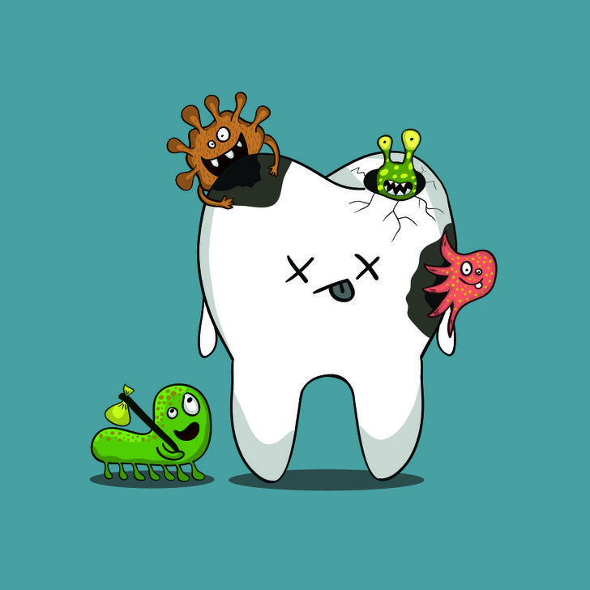

La caries es una enfermedad bucal producida principalmente por bacterias. Estas bacterias se alimentan de restos de comida, especialmente azúcar, y producen ácidos que dañan el esmalte dental.
Con el paso del tiempo, ese daño forma pequeños agujeros en los dientes llamados caries.
Síntomas
* dolor de dientes;
* sensibilidad al frío o calor;
* manchas oscuras;
* mal aliento;
* dificultad para comer.
¿Cómo prevenirlas?
* cepillarse después de las comidas;
* usar hilo dental;
* reducir el consumo de azúcar;
* visitar al odontólogo;
* cambiar el cepillo regularmente.
Información importante
Las caries no aparecen de un día para otro. Se desarrollan lentamente cuando la higiene bucal no es adecuada.
Por eso es importante cuidar los dientes todos los días.
